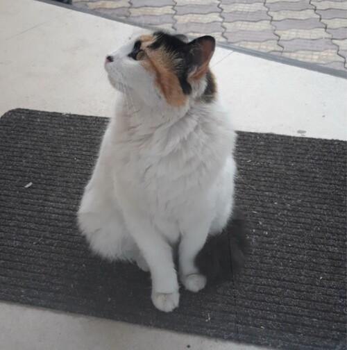
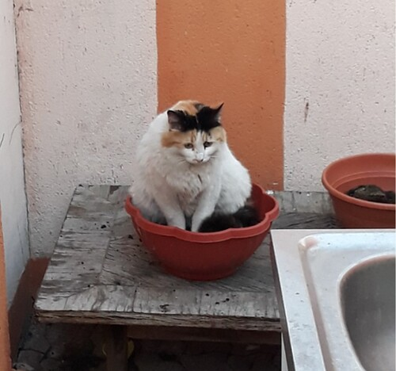
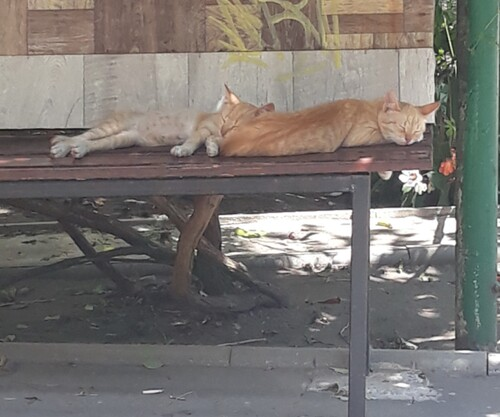
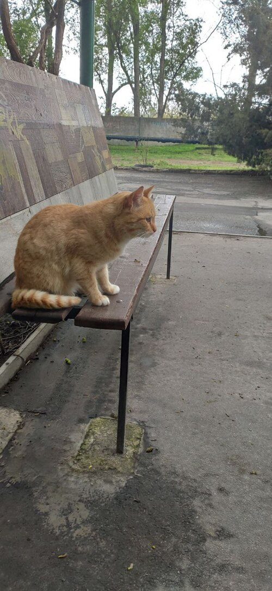

Мои котики
Своих Котиков у меня нет, поэтому я знакомлюсь с уличными. И считаю их своими.
Предлагаю и Вам с ними познакомится. Итак начнем...
Кошечка из Румынии - Фортуна
Я ее так назавал потому что я встретил ее зимой и ей повезло, так как я начал ее кормить. Конечно же в тот же момент, я стал ее ЛУЧШИМ другом.
Кстати, если вы задавались вопросом откуда берутся котики - то у меня есть ответ. Котики растут в горшках :)
Мелитопольские котики
Знакомьтесь, два брата, Симба и Баста.
К сожалению Симба где то пропал, очень надеюсь что у него все хорошо. А вот Баста вырос вот в такого красавца.
